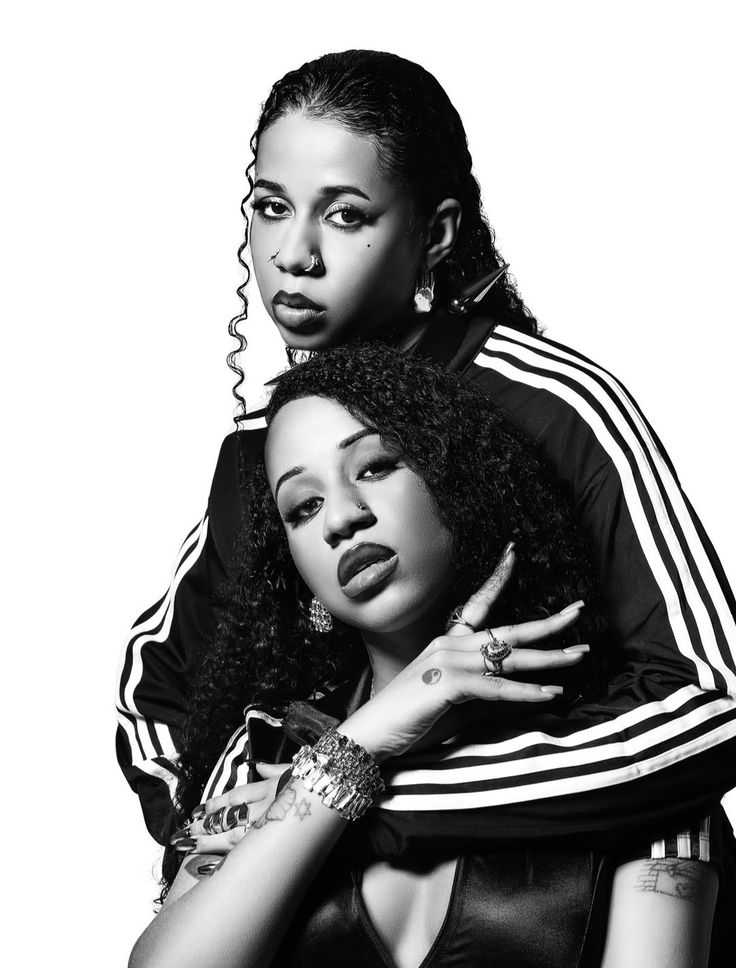

Tasha e Tracie Okereke são as fundadoras do movimento Expensive Shit, que une moda, música e ativismo. Criadas no Jardim Peri, elas utilizam o rap como ferramenta de emancipação e orgulho. A sonoridade da dupla é uma mistura potente de Trap e Funk, trazendo uma identidade visual que hoje é referência nacional absoluta em termos de estética periférica e cultura urbana
A estética visual das gêmeas é pautada na valorização das raízes africanas através do conceito "Favela Chic". Elas mostram que peças de brechó e customizações manuais podem superar grandes marcas em autenticidade e poder. Cada look apresentado em seus clipes reforça a mensagem de que a periferia pode e deve ditar as tendências de consumo global sem perder sua essência.
Com o lançamento do EP "Diretoria", a dupla alcançou um destaque meteórico, ocupando palcos de grandes festivais brasileiros. A lírica afiada de músicas como Tang e Willy aborda temas como independência financeira e a realidade das ruas paulistas. Dominar o cenário musical foi apenas o primeiro passo para essas artistas que também atuam como diretoras criativas e ícones de comportamento.
Atualmente, Tasha e Tracie são consideradas pioneiras de uma era onde a voz feminina preta ocupa o centro do debate. O legado das irmãs inspira milhares de jovens a buscarem sua verdade artística acima de qualquer padrão imposto. Resistência e brilho definem a trajetória dessas potências que continuam elevando o nome do Hip-Hop nacional para patamares nunca antes alcançados.
Confira a Galeria e Dados e o Fã Clube e Multimídia.
© 2026 - Eshley Meneses - Projeto 1º Bimestre